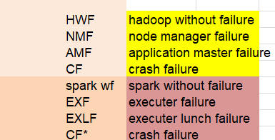
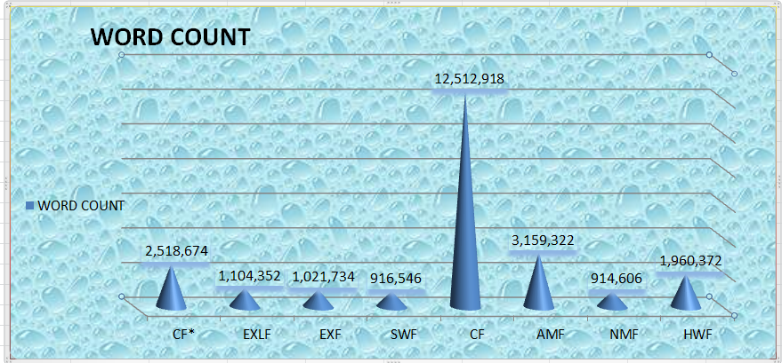
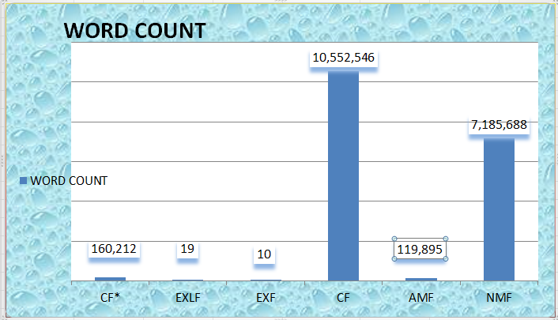
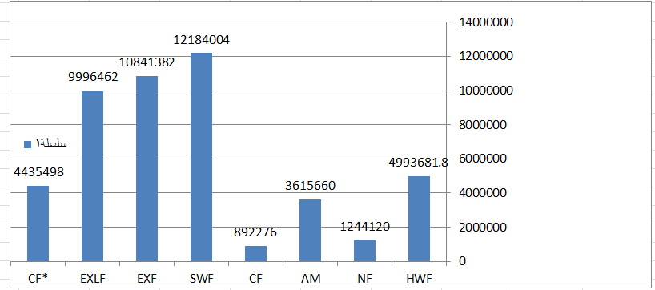

Syrian team in Raisoni
Syrian team in Raisoni
Results & Suggestions
Execution time and failover time (sec) :

Execution time (seconds).
Execution time (seconds).
diagram of the execution time (seconds).
fail-over time (sec) for all experiments.
fail-over time (sec) for all experiments.
Node manager failed :
1- When a node manager failure is injected into WordCount, all corresponding tasks are completed before the resource manager can detect a failure in the node manager and after it detects the failure, it takes a lot of time trying to get the results of the corresponding tasks, and a failure to fetch results is thrown, The application manager completes the work by launching new containers on other nodes and initiating corresponding tasks until completed ones that have not sent their output to the reduction tasks the application manager does not return to reserve containers on the node whose manager failed and when the application manager receives a notification that the last task of the work is finished, it tries to release the containers before printing a message telling the user that the work finished successfully and printing the work stats and counters, so it takes time because that is the task of the failed node manager. Application manager failed :
1- When executing the experiment in WordCount, we noticed that when the failure is injected into the application manager, it is immediately detected by the resource manager, who launches a new copy of it on another node. When executing, we note that if the program has finished a set of shorthand tasks when the failure is injected, the corresponding tasks are not re-executed. If it has not started with the reduction tasks, then all the corresponding tasks will be re-executed until the completed ones, and the failure is detected and quickly bypassed, unlike the case of the failure of the node manager, which takes somewhat longer. Hadoop data node crash failed :
1- The difference between a full crash and crashing agents such as a node manager, data node, or application manager, is that the operating system sends a TCP reset (RST) packet only when the agent is killed, Which is an early indication of the failure and this is what we notice, as it takes Hadoop about ten minutes to detect the failure and start remedial it when the crash fails. The application manager will re-execute all the tasks on another node and it will take a lot of time trying to finish the Reserved Containers on the crashed node, which leads to a very significant deterioration of the execution time of up to seventeen minutes in WordCount. Executor Launcher failed :
Killing the launcher leads to the failure of all the implementers it launched and all the tasks scheduled for them, as the failure is detected directly as in Hadoop and a new launcher is started on a new node, which in turn re-launches new implementers and schedules the execution of the incomplete stages with the contents of the tasks again. ((The launcher in Spark corresponds to the application manager in Hadoop, and if we come to the comparison of its failover in both, we note that, in WordCount, Spark is superior to Hadoop in its failover.)) Spark failed crash :
The node will not send a heartbeat so the failure will be detected and the tasks scheduled on this port will fail and will be reassigned to two other ports. ((We note that Spark is faster to bypass it because the number of agents running on the node is fixed, but Hadoop, the broken node contains the node manager and an unlimited number of running tasks whose killing affects the execution time)).
Throughput (MB/sec) :
throughput (MB/sec) for all experiments.
throughput plot (MB/sec) for all experiments.
• We note that the longer the execution time, the lower the productivity of the system and therefore, since the increase in execution in the event of a crash failure is greater than in other cases, so we find a significant deterioration in the productivity of the system when it occurs in both systems, while the failure of the application manager in Hadoop and the implementer in Spark is considered the least influential on productivity.
Results and Recommendations :
We note that in terms of the time both systems exceed the injected types of failure, the failure that affects both systems is the failure of the account node to completely crash, with its agents, but Hadoop is affected much more than Spark by the failure of the crash, as it takes about seventeen minutes in a program WordCount to bypass it, Then comes the failure of the node manager, as its failure time in WordCount reaches twelve minutes, and the increase in the time that occurs mostly in the application manager's attempt to release containers on the node whose manager failed, while the failure in the application manager is considered the least effective.
In WordCount, Spark is very tolerant of all types of failures except for crash failures. Nevertheless, it outperforms Hadoop in overcoming this failure, followed by launcher failures, while failure of the port is considered the least effective.